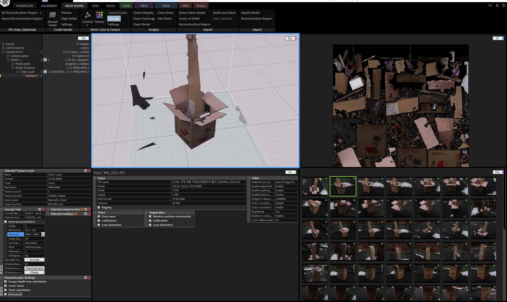
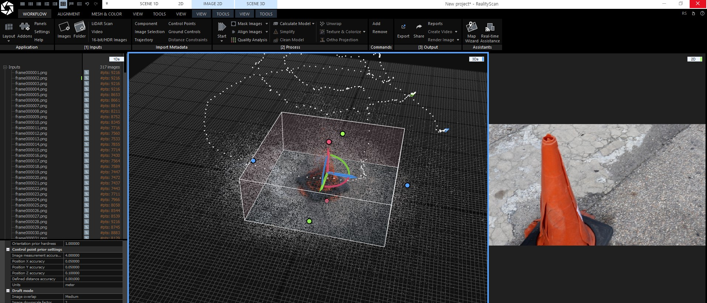

리얼리티 캡쳐 기반 작업은 촬영 단계에서 절반 이상이 결정됩니다.
빛이 많이 흔들리거나 표면 정보가 부족하면 후처리에서 해결하는 비용이 크게 늘어나기 때문에, 촬영 간격과 겹침 비율을 먼저 안정적으로 맞췄습니다.

리얼리티 캡쳐 기반 작업은 촬영 단계에서 절반 이상이 결정됩니다.
빛이 많이 흔들리거나 표면 정보가 부족하면 후처리에서 해결하는 비용이 크게 늘어나기 때문에, 촬영 간격과 겹침 비율을 먼저 안정적으로 맞췄습니다.

스캔 후에는 원본 메시를 그대로 쓰지 않고 필요한 형태만 남겨 게임용 메시로 다시 정리했습니다.
표면 디테일은 텍스처와 노멀에서 살리고, 메시 구조는 실제 배치와 충돌 처리를 고려해 단순화하는 흐름이 가장 안정적이었습니다.